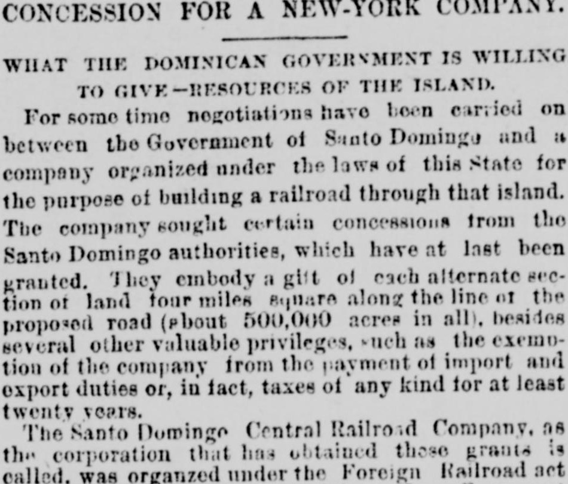
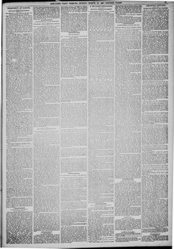

Several other valuable privileges, such as the exemption of theVarios otros privilegios valiosos, tales como la exención de los
New-York Tribune. New York [N.Y.], March 27, 1887. Page 11. Published by New York Tribune. A daily newspaper, 1866–1924.New-York Tribune. New York [N.Y.], 27 de marzo de 1887. Página 11. Publicado por New York Tribune. Periódico diario, 1866–1924. View the originalVer el original


See the full pageVer la página completaThe New-York Tribune reported on the Santo Domingo Central Railroad Company, a corporation organized by New York businessmen under the Foreign Railroad Act of 1883 with a capital of $500,000, which secured valuable concessions and a twenty-year tax exemption from the Dominican Government. General Horatio C. King serves as president, with General King and Henry L. Bean conducting most of the negotiations for the franchise, which was recently amended by the Dominican National Congress to require construction to begin within two years and finish within ten.El New-York Tribune dio cuenta de la fundación de la Santo Domingo Central Railroad Company, corporación constituida por financieros neoyorquinos al amparo de la Ley de Ferrocarriles Extranjeros de 1883 con un capital social de 500.000 dólares, la cual obtuvo del Gobierno dominicano valiosas franquicias y una exención impositiva por veinte años. El general Horatio C. King ocupa la presidencia, habiendo gestionado junto a Henry L. Bean la mayor parte de las cláusulas de la concesión, modificada hace poco por el Congreso Nacional dominicano para estipular que la explanación de las vías se inicie en el plazo de dos años y concluya en un decenio.
FULL TEXT:TEXTO COMPLETO:
WHAT THE DOMINICAN GOVERNMENT IS WILLING TO GIVE—RESOURCES OF THE ISLAND.LO QUE EL GOBIERNO DOMINICANO ESTÁ DISPUESTO A DAR—RECURSOS DE LA ISLA.
For some time negotiations have been carried on between the Government of Santo Domingo and a company organized under the laws of this State for the purpose of building a railroad through that island. The company sought certain concessions from the Santo Domingo authorities, which have at last been granted. They embody a gift of each alternate section of land four miles square along the line of the proposed road (about 500,000 acres in all), besides several other valuable privileges, such as the exemption of the company from the payment of import and export duties or, in fact, taxes of any kind for at least twenty years.Por algún tiempo se han llevado a cabo negociaciones entre el Gobierno de Santo Domingo y una compañía organizada bajo las leyes de este Estado con el propósito de construir un ferrocarril a través de esa isla. La compañía buscó ciertas concesiones de las autoridades de Santo Domingo, que al fin han sido otorgadas. Ellas encarnan un donativo de cada sección alterna de tierra de cuatro millas cuadradas a lo largo de la línea del camino propuesto (unas 500,000 acres en total), además de varios otros valiosos privilegios, tales como la exención de la compañía del pago de derechos de importación y exportación o, en efecto, impuestos de cualquier clase por al menos veinte años.
The Santo Domingo Central Railroad Company, as the corporation that has obtained these grants is called, was organized under the Foreign Railroad act...La Compañía del Ferrocarril Central de Santo Domingo, como se llama la corporación que ha obtenido estas concesiones, fue organizada bajo la ley de Ferrocarriles Extranjeros...
This collection gathers the coverage of the Dominican Republic in the American press, in the order it was published.Esta colección reúne la cobertura de la República Dominicana en la prensa estadounidense, en el orden en que se publicaron.